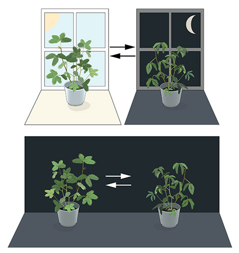
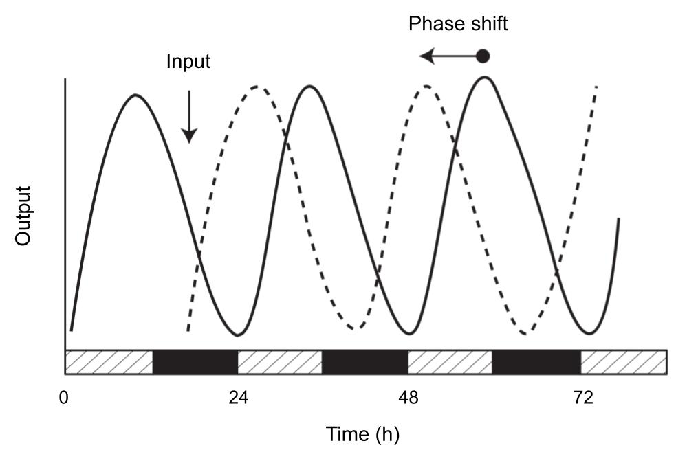
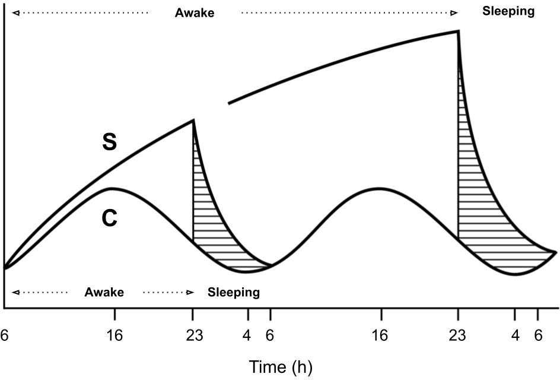

2 On Chronobiology
The dimension of time, manifest in the form of rhythms and cycles, like the alternating patterns of day and night as well as the annual transition of seasons, was consistently featured in the evolutionary journey of not only the human species but also all other life forms on our planet. These rhythms and cycles brought with them evolutionary pressures, resulting in the development of a temporal organization that allowed organisms to survive and reproduce in response to the conditions imposed by the environments they inhabited (Menna-Barreto, 2003; Pittendrigh, 1981). An example of this organization can be observed in the presence of different activity-rest patterns among living beings as they adapt to certain temporal niches, such as the diurnal behavior of humans and the nocturnal behavior of cats and some rodents (Foster & Kreitzman, 2005).
For years, scientists debated whether this organization was solely in response to environmental stimuli or if it was also present endogenously, internally, within organisms (Rotenberg et al., 2003). One of the early seminal studies describing a potential endogenous rhythmicity in living beings was conducted in 1729 by the French astronomer Jean Jacques d’Ortous de Mairan. De Mairan observed the movement of the sensitive plant (mimosa pudica) by isolating it from the light-dark cycle and found that the plant continued to move its leaves periodically (Figure 2.1) (de Mairan, 1729; Rotenberg et al., 2003). Charles Darwin also wrote about the movement observed in plants and made thematic explorations of these intriguing “periodical phenomena” (Andrade & Beale, 2024). The search for this internal timekeeper in living beings only began to solidify in the 20th century through the efforts of scientists like Jürgen Aschoff, Colin Pittendrigh, Franz Halberg, and Erwin Bünning, culminating in the establishment of the science known as chronobiology, with a significant milestone being the Cold Spring Harbor Symposium on Quantitative Biology: Biological Clocks in 1960 (chrónos, from Greek, meaning time; and biology, pertaining to the study of life) (Cold Spring Harbor Laboratory, n.d.; Rotenberg et al., 2003)1. However, the recognition of endogenous rhythmicity by the global scientific community truly came in 2017 when Jeffrey Hall, Michael Rosbash, and Michael Young were awarded the Nobel Prize in Physiology or Medicine for their discoveries of molecular mechanisms that regulate the circadian rhythm in fruit flies (circā, from Latin, meaning around, and dĭes, meaning day (Latinitium, n.d.) – a rhythm that expresses itself in approximately one day) (Nobel Prize Outreach AB, n.d.).

Source: Reproduction from Nobel Prize Outreach AB (n.d.).
Science has already showed and described various biological rhythms. These rhythms can occur at different levels, whether at a macro level, such as the menstrual cycle, or even at a micro level, such as rhythms expressed within cells (Roenneberg & Merrow, 2016). Like many other biological phenomena, these are complex systems present in all living beings, i.e., systems with a large number of connected parts that presents stable macroscopic patterns (emergences, in this case, the rhythms) arising from local interactions or the collective behavior of its parts, giving the system properties not attained by the aggregate summation (Epstein, 1999; Holland, 2014). It is understood today that the endogeneity of rhythms has provided organisms with an anticipatory capacity, allowing them to organize resources and activities before they are needed (Marques & Menna-Barreto, 2003).
Despite the endogenous nature of these rhythms, they can still be regulated by the external environment. Signals (cues) from the environment that occur cyclically in nature and have the ability to regulate biological rhythmic expression are called zeitgebers (from the German zeit, meaning time, and geber, meaning donor (Cambridge University Press, n.d.)). These zeitgebers act as synchronizers by entraining the phases of the rhythms (Khalsa et al., 2003; Kuhlman et al., 2018) Figure 2.2. Among the known zeitgebers are, for example, meal timing and changes in environmental temperature (Aschoff, 1981; Roenneberg & Merrow, 2016). However, the most influential of them is the light-dark cycle (or, simply, light exposure). It is understood that the day/night cycle, resulting from the rotation of the Earth, has provided the vast majority of organisms with an oscillatory system with a periodic duration of approximately 24 hours (Kuhlman et al., 2018; Roenneberg, Kuehnle, et al., 2007).

Source: Adapted from Kuhlman et al. (2018).
Naturally, the expression of this temporal organization varies from organism to organism, even among members of the same species, whether due to the different ways they are exposed to the environment or the differences in the expression of endogenous rhythmicity, which, in turn, results from gene expression (Roenneberg, Kumar, et al., 2007). The interaction between these two expressions, external and internal, of the environment and genotype, generates a signature, an observable characteristic, which is called a phenotype (Frommlet et al., 2016).
The various temporal characteristics of an organism can be linked to different oscillatory periods. Among these are circadian phenotypes, which refer to characteristics observed in rhythms with periods lasting about a day (Foster & Kreitzman, 2005). Another term used for these temporal phenotypes, as the name suggest, is chronotype (Ehret, 1974; Pittendrigh, 1993). This term is also often used to differentiate phenotypes on a spectrum ranging from morningness to eveningness (Horne & Östberg, 1976; Roenneberg et al., 2019).
Sleep is a phenomenon that exhibits circadian expression. By observing the sleep characteristics of individuals, it is possible to assess the distribution of circadian phenotypes within a population, thereby investigating their covariates and other relevant associations (Roenneberg et al., 2003). This is because sleep regulation is understood as the result of the interaction between two processes: a homeostatic process (referred to as the \(\text{S}\) process), which is sleep-dependent and accumulates with sleep deprivation; and a circadian process (referred to as the \(\text{C}\) process), whose expression can be influenced by zeitgebers, such as the light-dark cycle (Figure 2.3 illustrates these two process) (Borbély, 1982; Borbély et al., 2016). Considering that the circadian rhythm (the \(\text{C}\) process) is present in sleep, its characteristics can be estimated if the \(\text{S}\) process can be controlled.

Source: Adapted from Borbély (1982).
Building on this idea, Roenneberg et al. (2003) developed the Munich Chronotype Questionnaire (MCTQ) to measure the circadian phenotype through sleep patterns. The MCTQ asks individuals about their sleep habits, such as the times they go to bed and wake up on workdays and work-free days. Based on this information, the MCTQ calculates the local time of the midpoint of sleep on work-free days Figure 2.4 and, if sleep deprivation is detected on workdays, adjusts the measurement accordingly. This midpoint, reflecting sleep without social obligations, is thought to represent the unabridged expression of the circadian rhythm. Given its basis in the two processes of sleep regulation, the MCTQ provides a good proxy for measuring the circadian phenotype (or \(\text{C}\) process) (Leocadio-Miguel et al., 2014).

Source: Create by the author.
For this thesis, the MCTQ serves as the instrument for measuring subjects’ chronotypes (circadian phenotypes). The study uses a dataset of \(65\,824\) Brazilian respondents from an online survey conducted by the author in 2017, which includes geographical data such as postal codes. This data enables the examination of the potential association between chronotype and geographic factors, particularly latitude and longitude. The research ultimately seeks to determine whether latitude plays a role in shaping chronotype, contributing to our understanding of circadian rhythms in relation to geographic variables.
Some say the term chronobiology was coined by Franz Halberg during the Cold Spring Harbor Symposium (Menna-Barreto & Marques, 2023, p. 21).↩︎